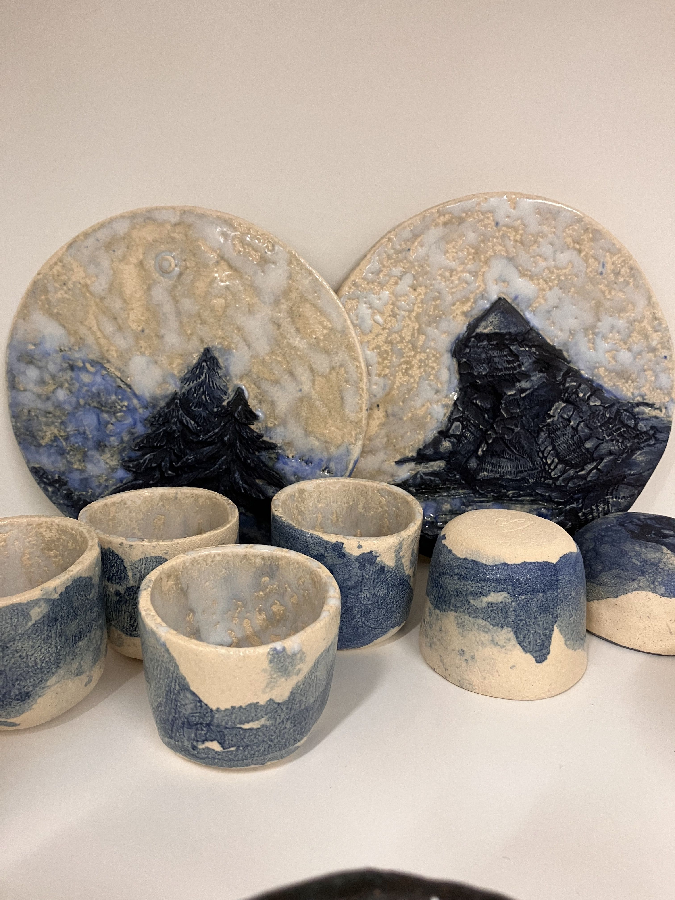

Galerie des Créations en Poterie Artisanale
Découvrez notre collection de sculptures, objets décoratifs et ustensiles en céramique faits main dans notre atelier à Bruz. Chaque pièce est unique et reflète notre passion pour l'art de la poterie et du modelage.
Nos Créations Récentes

Maisonnette

Le petit blaireau

Prairie en porcelaine

Ecureuil en chasse

Femme sans visage

Maison

Animaux de la mer

Bon appétit !

Maisons ou cabanes ?

Petits oiseaux

Le début d'un potager ?

Pour la table

Tête de tortue

A table

Animaux

Madame/Monsieur

Le dragon

Hermine Blanche

Dragon perché

Rhino et Chat

El Toro Bravo

Ti Biscuit

Soleil levant

Africa

Aquarium

Femmes de dos

La mouette

Notre sirène

L'escargot

Poisson Queue

Le poisson jaune

Caméléon

Portrait

Nos créations

Homme & son fils

Buste

2 bonhommes

Vase

Les frères Pingouin

Les marins

Les soeurettes

La Famille

La cousine

Vase Céramique

Jardin des fleurs

Sculpture femme

Plateau étoilé

Réunion de poissons

Elephant star

Strass & Paillettes

Le beurrier étoilé

L'Hotel de Noël

Tea Time

2 poules à la campagne
Nos Techniques de Poterie
Le Modelage
Nos créations sont façonnées à la main, utilisant des techniques traditionnelles de modelage qui permettent d'obtenir des formes uniques et expressives. Chaque pièce raconte une histoire à travers ses courbes et ses textures.
L'Émaillage
Nous utilisons différentes techniques d'émaillage pour apporter couleur et finition à nos créations. Des émaux artisanaux aux glaçures colorées, chaque pièce bénéficie d'un traitement qui rehausse sa beauté naturelle.